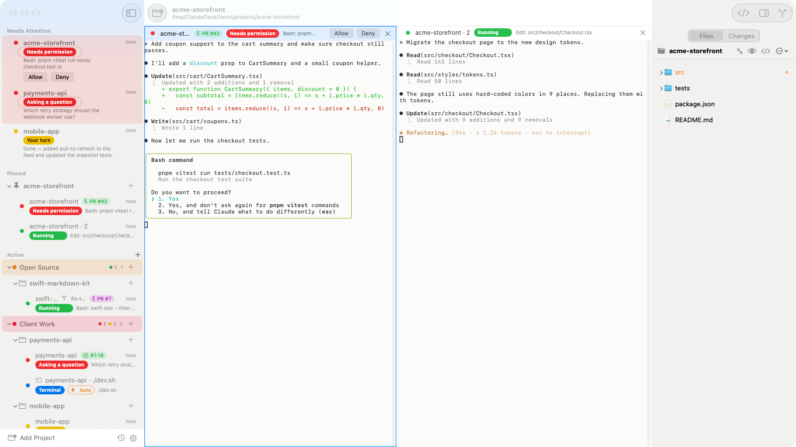
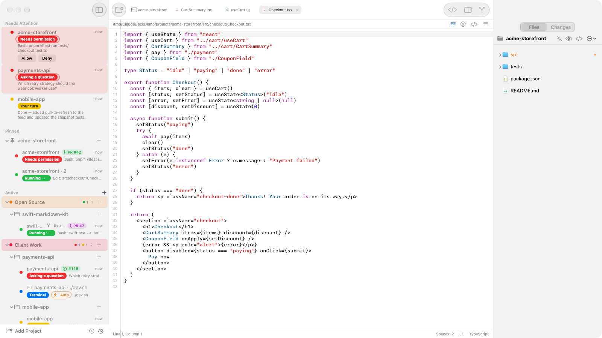
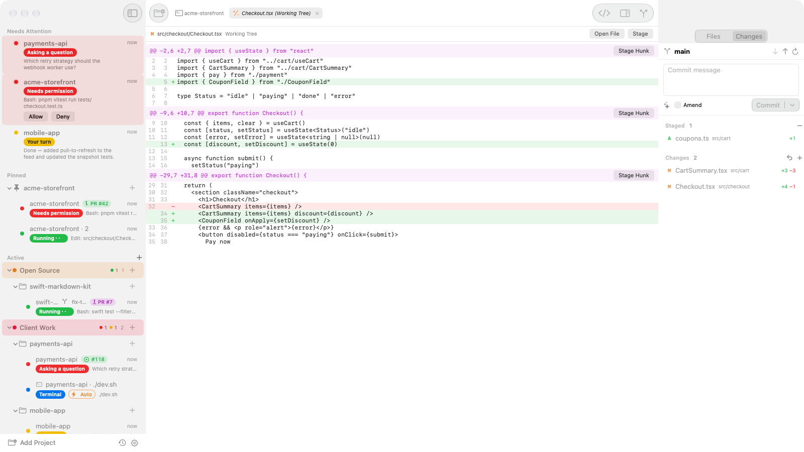
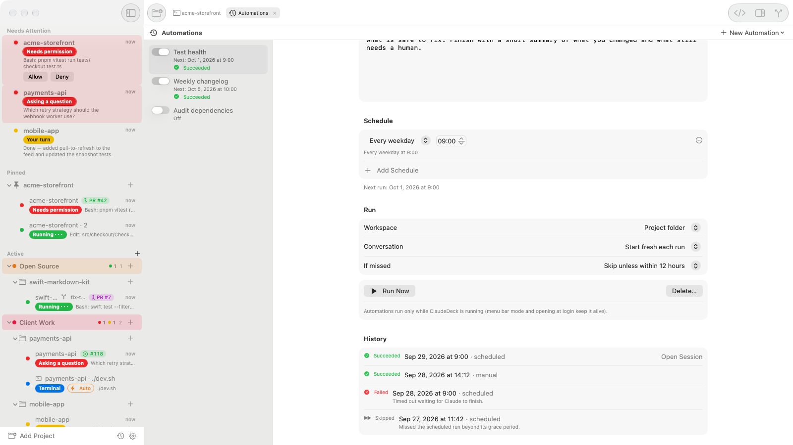
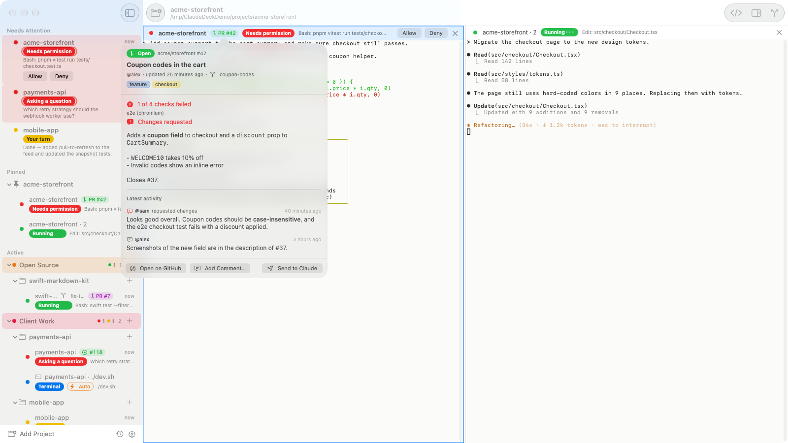
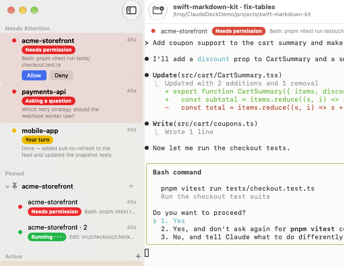
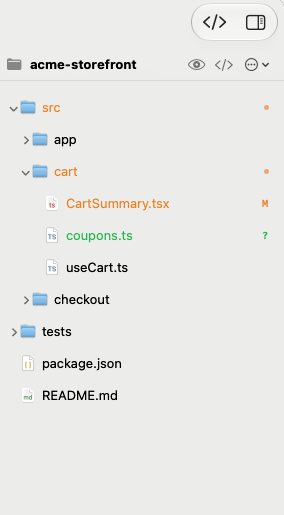
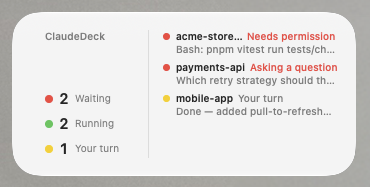

Tüm Claude Code oturumların tek Mac penceresinde.
Hangi oturum çalışıyor, hangisi izin bekliyor, hangisinde sıra sende: tek bakışta gör. İzni bildirimden ver, oturumları yan yana aç, uygulamayı kapatıp açınca kaldığın yerden devam et.
İçeriden bir bakış


@yol#L10-20 için Claude'a Ekle.


gh'ını kullanır.

@yol olarak eklenir. ⌘P ile herhangi bir dosyayı adıyla açarsın.
Her oturumun ne yaptığını nasıl bilir
Ekran okumaz, terminal çıktısını ayrıştırmaz. ClaudeDeck, Claude Code'un zaten sunduğu hook'ları dinler.
Kendi
claude'unu çalıştırırsınHer oturum, kurulu Claude Code CLI'ının gerçek bir terminalde çalışan hâlidir. Ayarların,
CLAUDE.md, MCP sunucuların ve skill'lerin aynen geçerlidir.Küçük bir hook durumu bildirir
İlk açılışta ClaudeDeck, yedek aldıktan sonra
~/.claude/settings.jsondosyasına tek bir hook ekler. Hook yalnızca ClaudeDeck'in terminallerinde çalışır.Sıra sana gelince haber alırsın
İzin istemleri, sorular ve biten işler kenar çubuğunda, bildirimlerde, Dock rozetinde ve menü çubuğunda görünür.
Neler var
Terminal pencereleri arasında gidip gelmeden birçok oturumu yürütmek için gereken her şey.
- Her oturum için canlı durum
- Çalışıyor, izin bekliyor, soru soruyor ya da sıra sende; her oturum için.
- Her yerden izin ver ya da reddet
- İzin istemlerine bildirimden, kenar çubuğundan ya da bölme başlığından cevap ver.
- Bekleyenler en üstte
- Seni bekleyen oturumlar, proje adı ve ne istedikleriyle birlikte başta listelenir.
- Yan yana bölmeler
- Dört oturuma kadar sürükleyip yan yana koy. Bölmeyi kapatmak oturumu durdurmaz.
- Yeniden başlatınca kaldığı yerden
- Açık oturumlar
claude --resumeile geri gelir. Şişen context'lere otomatik/compactgönderilir. - Paralel worktree oturumları
- Aynı projede, her biri kendi git worktree'sinde çalışan ve birbirinin dosyalarına dokunmayan oturumlar.
- Git geçmişli dosyalar paneli
- Canlı dosya ağacı, değişiklik işaretleri, dosya bazında diff, Hızlı Aç ve Dosyalarda Bul. Dosyayı Claude'a sürükle,
@yololarak eklensin. - Sekmeler ve yerleşik düzenleyici
- Dosyaları, diff'leri ve Otomasyonlar'ı sekmede aç. Sözdizimi renkli, Claude'a
@yol#L10-20ekleyen hafif bir düzenleyici. - Hunk bazında Değişiklikler
- Pencereden çıkmadan stage, discard, commit, push ve pull. Commit mesajını Claude yazar.
- GitHub issue'ları ve pull request'leri
- Bir oturuma bağla; durumunu, review'ları ve CI'ı gör, yeni review, kırılan kontrol ve merge'lerden haberin olsun.
- Otomasyonlar
- Saatlikten haftalığa zamanlanmış prompt'lar, Şimdi Çalıştır ve her çalışmanın geçmişi. Uygulama açıkken çalışırlar.
- Oturumu yerinde yeniden başlat
- ⌥⌘R
claude'dan çıkıp aynı konuşmaya döner; yeni MCP sunucuları ve ayarlar devreye girer. - Pencil (pen.dev)
- ClaudeDeck'in başlattığı oturumlar Pencil'ın tasarım araçlarını kullanabilir;
.pendosyaları Pencil'da açılır. - Düz terminaller de
- Proje klasöründe shell; istersen
yarn startgibi bir başlangıç komutuyla. - Widget ve menü çubuğu
- Bekleyen, çalışan ve biten oturumlar için masaüstü widget'ı ve menü çubuğu sayaçları.
- Projeler, gruplar ve iCloud
- Projeleri sabitle, grupları renklendir; istersen listeyi Mac'lerin arasında eşitle.
Nedir, ne değildir
ClaudeDeck, zaten kullandığın Claude Code'un etrafında bir penceredir.
| ClaudeDeck şudur | ClaudeDeck şu değildir |
|---|---|
Kurulu claude CLI'ın için bir oturum yöneticisi | Claude Code'un yerine geçen bir sohbet uygulaması ya da API istemcisi |
| Claude Code'un resmi hook'larıyla çalışan bir pano | Ekranını okuyan ya da tuş kaydeden bir araç |
| Yerel bir Mac uygulaması; hiçbir veri bilgisayarından çıkmaz | Bulut hizmeti, hesap sistemi ya da telemetri |
| Senin basacağın tuşa basan bir kısayol | İzinleri kendi kendine onaylayan bir otomasyon |
Ücretlendirme, kullanım limitleri ve oturum açma Claude Code'a aittir.
Kurulum
DMG'yi indir
En son
ClaudeDeck-<sürüm>.dmgdosyasını GitHub Releases sayfasından al.Applications'a sürükle
Uygulama Apple tarafından imzalanmış ve notarize edilmiştir; Gatekeeper uyarısı olmadan açılır.
Projelerini ekle
Bir proje klasörü seç ve Claude oturumu başlat. ClaudeDeck hook'unu ilk açılışta kurar.
- macOS 15 veya üstü ve kurulu Claude Code gerekir.
- İsteğe bağlı: GitHub bağlantıları için GitHub CLI, tasarım araçları için Pencil.
- İngilizce ve Türkçe kullanılabilir; sistem dilini izler.
- Kendin derlemek mi istiyorsun? README nasıl yapılacağını anlatıyor.